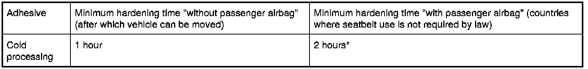

Instructions on Gluing Windscreen
51 31 ... - Instructions on gluing windscreen
Important!
The "1-hour" system will be introduced from 03/09.
Two different adhesive systems are described and identified accordingly in the following:
"1-day system"
"1-hour system"
These instructions are not applicable to door window cementing (door "center") on the E38/L7:
Work steps for removing and installing windscreens:
- is displayed at the end of this document by clicking on the "framed cross-reference"
General:
The windscreen and rear window (also the rear side windows if necessary) are bonded to the body. This gluing will increase the torsional strength of the vehicle. To obtain perfect bonding, comply with the installation procedure described in the following.
It is possible to tow or drive without windscreen or rear window.
The windscreen must be secured with yellow plastic adhesive tape (sourcing reference: BMW Parts Service) after being installed. The paint must be completely hardened after painting work.
- Set down window glass and process on BMW-approved X-universal stand.
- In winter, the vehicles must stand in a room with a temperature of at least 15° C.
On-the-job safety:
When working with adhesive products (adhesive, cleaning agent, bonding agent etc.):
- Wear protective goggles, protective gloves and if necessary an apron.
- Ensure rooms are well ventilated.
- Change work clothing contaminated with adhesive immediately.
- Change work clothing contaminated with solvents and swelling agents immediately (keep spare work clothing on hand).
- Take skin protection measures, provide washing facilities including hot water, use silicone-free skin creams
- Provide eye bath facilities, change water regularly (once a month).
- Comply with the relevant safety regulations
- Do not eat, drink or smoke in areas of PUR processing.
Replacement of windscreens:
Version with head-up display (HUD):
- Marking for HUD must be present on the windscreen
Version with front passenger airbag:
- Stick on reminder label 00 00 ... Information/Warning Labels
Tools for cutting through adhesive bead:
* not included in BMW blade set
Storage temperature:
Storage temperature of all adhesive products of 5° C to 25° C must be observed.
Adhesive:
The BMW-approved 1-component polyurethane adhesive must be used for bonding.
- 1-day system:Adhesive cartridge* (part number 83 19 0 152 031)
1-hour system:Adhesive cartridge* (part number 83 19 0 444 144)
* Sourcing reference: BMW Parts Service
Adhesive is applied to window glass with cartridge gun (pneumatically or electrically operated, sourcing reference: BMW Workshop Equipment and Planning Documentation).
When using accelerator (hot processing, 3-hour system):
- Temperature (min. 80 ± 5° C) of cartridge oven must be checked every morning. Connect temperature sensor to DIS (Diagnosis and Information System) or to ISID (Integrated Service Information Display), if necessary in conjunction with MIB (Measurement Interface Box)
- Heat adhesive for at least 1 hour in cartridge oven (sourcing reference: BMW Parts Service) to 80 ± 5° C
- Write date and time on adhesive when inserting into cartridge oven
- Insufficient heating (< 1 hour) results in the formation of bubbles/blisters (gluing/cementing not permitted)
- Temperature < 80 ± 5° C results in the formation of bubbles/blisters (gluing/cementing not permitted)
- Remove cured adhesive prior to further processing.
- Mistake in mixing in event of an interruption in application >1 minute (gluing/cementing not permitted)
- A test bead of 50...70 mm must be rejected after an interruption in application
- Best before dates of accelerator and adhesive must not be more than 3 months apart
- Best before date > 3 months results in the formation of bubbles/blisters (gluing/cementing not permitted)
Sealed adhesive:
- May only be stored for a maximum of 8 hours once it has been heated up to 80 ± 5° C.
- The adhesive will be damaged if this time is exceeded (gluing/cementing not permitted)
- Damaged adhesive must not be used and must be disposed of in compliance with national regulations
- Cartridge may only be heated up once
- If the lower label is black, this adhesive may only still be used cold without accelerator while adhering to the Best before date.
Important!
Not all window glass may be bonded with accelerator (hot processing).
If hot processing is not permitted, this is described in the relevant document.
Adhesive Best before date:
Repair kit and adhesive cartridges are marked with a date (Best before).
The adhesive cannot be used after this date.
Adhesive disposal:
Pure hardened adhesive is handled as normal waste.
The adhesive is disposed of in paper bags so that it can react with moisture.
Non-hardened adhesive, cartridges and mixtures of adhesive and solvents and the like must be disposed of as special waste.
Accelerator (3-hour system):
Accelerator is screwed onto the adhesive cartridge and contains a reaction paste which is mixed with the heated adhesive.
Important!
The accelerator may only be paired with the adhesive cartridge of an unopened package (bubbling).
Adhesive and accelerator must be paired while taking into account the Best before dates.
The accelerator may no longer be used if the Best before dates are more than 3 months apart.
Bonding agent (activator):
The BMW-approved bonding agents must be used to treat bonding areas:
1-day system:
- "Glass Activator 1" (on glass ceramic material)
- "Paint Activator A" (on sheet metal flange or residual adhesive bead)
1-hour system:
- "Glass Activator 2" (on glass ceramic material), yellow stick, BMW part number: 83 19 0 144 142
- "Paint Activator B" (on sheet metal flange), blue stick, BMW part number: 83 19 0 154 458
Prepare Glass Activator 2 and Paint Activator B for processing by shaking and snapping (breaking glass ampoule).
Apply Glass Activator (2) by pressing gently. There is no need for final wiping. Ventilation time approx. 2 minutes.
Apply Paint Activator B by pressingly gently. Then wipe dry with a paper towel (available in a set).
Bonding agent Best before date:
Repair kit and bonding agent are marked with a date (Best before).
- The bonding agent may only be used up to this date (if not already opened previously).
- Once it has been opened (locking ring broken), use for 1 week only even if the Best before date has not been reached.
Note:
Write the date on the bottle when opening the bonding agent for the first time.
Close the bottle immediately after extracting the bonding agent (reaction with air).
Removal of window glass:
Important!
As of E63 and E87 it will only be possible to remove the rear window with the "Roll Out 2000 [1][2]51 31 ... Remove Windscreen With "Roll Out 2000"".
Cover side panels, roof aerial and if necessary interior trim with protective covers.
Tape off body with fabric adhesive tape (e.g. Tesa) in areas where the oscillating blade could damage the window glass or the paint.
When using cutting wire, pull cutting wire ends through special tool 51 3 270 51 3 270 Pull Handles, bend and tape off with fabric adhesive tape (e.g. Tesa) (risk of injury and damage).
When removing the windscreen:
- Wear protective goggles and gloves.
Cut through adhesive bead of window glass:
- with "Roll Out 2000 [1][2]51 31 ... Remove Windscreen With "Roll Out 2000""* (wire cutting system); no paint is damaged here in the case of narrow gaps
- with special cutter* and oscillating blade*
- *Sourcing reference: BMW Workshop Equipment and Planning Documentation
Prior to each use, regrind the blade with a grinding stone while the machine is running (new blades also).
Avoid damage to paintwork on body cutout.
Guide blade carefully between body and window glass.
Run blade of knife parallel to glass.
Cut through adhesive bead as closely as possible to window glass.
To remove adhesive bead in body cutout (and on window glass if reusing):
- Use a scalpel for heavy-duty applications
- Cut off residual adhesive to a thickness of approx. 0.5 mm
- Remove residual bead only briefly before bonding
Damage to paintwork in body aperture:
To ensure long-term corrosion protection, it is absolutely essential to touch up damage to paintwork!
The "BMW Color System" painting handbook forms the basis of these repair instructions and must be observed without fail.
Touch up damage to paintwork on body cutout with BMW multibase filler.
Grind out scratches in non-visible areas and touch up with BMW multibase filler.
Grind extensive areas of damage down to the bare metal and coat with BMW multibase filler (coating thickness 30 ... 40 mm).
Hardening time:
- With infrared, at least 10 minutes
- Without infrared for at least 60° C, at least 30 minutes
- Without infrared for at least 20° C, at least 24 hours
If a complete build-up of paint is required in the visible area:
- Tape off primed bonding flange before applying top coat
Important!
Observe hardening time of BMW multibase filler otherwise a perfect bond cannot be guaranteed!
Treatment of glued area in body:
Important!
Do not use Sika remover 208 for cleaning in the bonding area.
Preparation for assembly:
Prepare plastic nozzle(s) for shaping adhesive bead (when not using the standard nozzle), can be cut to size during the air drying time.
Lay a test bead of approx. 50 mm - watch out for formation of bubbles/blisters when hot cementing; if OK, apply immediately to window glass.
- Interruption must be < 5 second (incorrect mixture ratio).
Cartridge must be vertical to window glass.
Black ceramic material impermeable to UV light is located on the peripheral zone of the inside edge of the window to protect the adhesive bead.
Glass ceramic material must not be damaged and must be treated as follows.
1-day system: Treatment of glass ceramic surface (inside of window):
1-hour system: Treatment of glass ceramic surface (inside of window):
Version with inspection window for vehicle identification number in windscreen only (all except US/GB):
- Seal inspection window (bottom left) with Sika primer 206 G+P
Adhesive quantities:
Approx. 1 1/4 adhesive cartridges are required to cement the windscreen on the following vehicles:
- 7 Series
- 5 Series from E60
- X5
- X3
In the case of hot cementing (with accelerator), the missing residual bead is applied from a second adhesive cartridge (not contained in the repair kit) but while cold and without accelerator (bubbling).
Minimum hardening period is thus not increased.
Important!
If a second cartridge is required for cementing:
- First apply cold adhesive to cowl panel at bottom (skin formation time)
- Accelerator from repair kit must not be used with the second cartridge (bubbling)
Bubbling results in leakage and insufficient bonding strength (torsional rigidity, passenger airbag).
Effect of differing adhesive quantities:
Spacer buffers:
Before sticking on new spacer buffers, remove all remaining traces of old spacer buffers completely.
Position of spacer buffers must be observed exactly.
Incorrectly fitted spacer buffers will result in:
- Windscreen glass breakage
- Leakage (if the spacer buffer is in the adhesive area)
- Wind noises
Assembly:
To prevent a pressure increase in the vehicle interior when the doors are closed:
- Open a window
Important!
1-day system:
After the adhesive bead has been applied, the window glass must be fitted within 5 to 10 minutes (depending on air humidity, temperature and use of accelerator).
After 5 to 10 minutes the adhesive bead forms a skin which can no longer guarantee a perfect bond.
To secure the windscreen, use only the yellow plastic adhesive tape (sourcing reference: BMW Parts Service, part number 83 19 9 410 979).
The glass will slip down if other adhesive tapes are used.
Windscreen slippage will result in leaks and wind noises.
1-hour system:
Once the adhesive bead has been applied, the windscreen must be installed within 7 minutes (depending on air humidity, temperature).
After 7 minutes the adhesive bead forms a skin which can no longer guarantee a perfect bond.
To secure the windscreen, use only the yellow plastic adhesive tape (sourcing reference: BMW Parts Service, part number 83 19 9 410 479).
The glass will slip down if other adhesive tapes are used.
Windscreen slippage will result in leaks and wind noises.
Remove adhesive residue immediately with adhesive remover (Sika remover 208, sourcing reference: BMW Parts Service). Do not press out the window glass again.
Hardened adhesive can only be removed by machine.
Check height of windscreen/rear window with special tool 51 0 010 51 0 010 Test Gauge for Windscreen and Rear Window Installation or 51 3 210 51 3 210 Gauge.
Assemble car.
Hardening:
The adhesive hardens as it reacts with air humidity (with accelerator also due to mixed-in reaction paste) at room temperature.
Minimum hardening time (table) is obtained from 22° C and 38% relative air humidity.
At ambient temperatures above 23° C and 50% relative air humidity (hot countries), the adhesive open time is shortened to approx. 5 minutes (skin formation time).
The adhesive hardening process is interrupted completely at ambient temperatures below 5° C. In this event, there will be no increase in the strength of the adhesive bond.
Do not subject the vehicle to load on one side during the minimum hardening time (see table, without passenger airbag), such as e.g.:
- one wheel on curb
- lifting platform
- etc.
Maneuvering inside garage/workshop:
- only permitted on level ground
- do not under any circumstance driver over access ramps, e.g. into multi-store car parks
Remove adhesive tapes after hardening time.
If you fail to adhere to the minimum hardening times (see table, without passenger airbag):
- leaks and wind noises will occur when the windscreen is moved
1-day system: Glues and their minimum hardening times:

1-hour system: Glues and their minimum hardening times:

* Note:
Vehicles with passenger airbag:
The vehicle can be handed over to the customer after the hardening period (vehicle can be moved, adhesive-dependent) with the following warning:
Once the windscreen glass has been bonded, all occupants must travel with their seatbelts attached for "... hours"!
The time is taken from the "Minimum hardening period" table for countries where seatbelt use is not required by law.
Important!
If the minimum hardening time is not adhered to:
- the front passenger together with the windscreen may fall out of the vehicle in the event of an accident after the front passenger airbag has been triggered
Locate leaks:
- by spraying water underneath sealing lips
- with ultrasonic leak detector (sourcing reference: BMW Parts Service)
If necessary, seal leakage with appropriate nozzle.
Version with GPS navigation system 1 (up to 09/97):
After installation of rear window:
- Recalibrate magnetic field sensor
- Refer to function description in ISID (Integrated Service Information Display)
Version with rain sensor, rain/light sensor or rain/light solar sensor:
Remove complete rain sensor, rain/light sensor or rain/light solar sensor, see repair instruction Service and Repair.
After replacing windscreen:
- Initialize rain sensor, rain/light sensor or rain/light solar sensor
- Refer to function description in ISID (Integrated Service Information Display)
Version with automatic air conditioning:
After replacing windscreen:
If fogging sensor is not mounted on new windscreen:
Replace fogging sensor, refer to repair instructions.
Version with head-up display (HUD):
When replacing windscreen in vehicles with rain/light solar sensor, replace this completely: refer to repair instructions.
Before bonding, install windscreen with seal(s) and check HUD; if necessary, press expanding foam tape down with hand roller.
After bonding windscreen, check and if necessary adjust HUD.
Work steps for removing and installing windscreens:
refer to repair instructions.
Note:
If no document is displayed after you have clicked on a "framed cross-reference":
It is not necessary or permitted for the model selected.